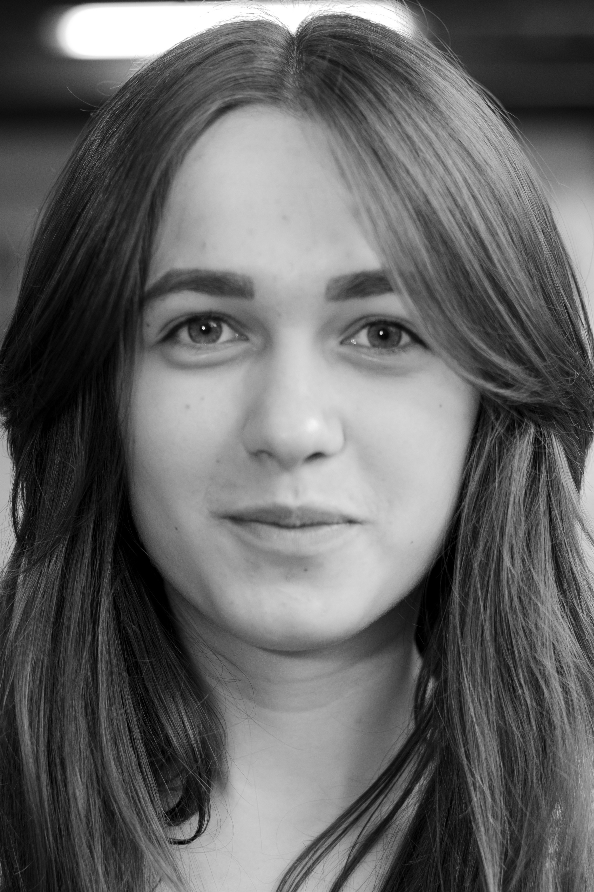

Kontaktné Údaje

email: kuchelnat@gmail.com
telefon: +421 950348433
Tetiana Kukhelna
Vzdelanie
Fakulta elektroniky a informatiky STU, Bratislava
2019-sučasnosť,Aplikovaná informatika, 3 ročnik bakalárskeho študia
Počitačové zručnosti
C - mierne pokročilý
Python - základy
Matlab - základy
UNIX/Linux - pokročilý
HTML - základy
CSS - základy
Jazykové zručnosti
Anglický jazyk - pokročilý
Ukrajinský jazyk - materinský
Ruský jazyk - materinský
Slovenský jazyk - pokročilý